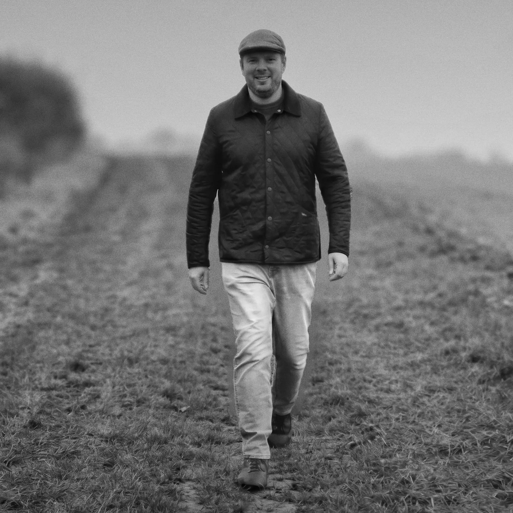

The photo is mapped onto a rough 3D model of the field: the ground as a plane running back to the horizon, the fog and trees on a card far off, and Luke on a cut-out card where he stands. The camera orbits a little as the section scrolls past, so the ground turns under his feet while the distance barely moves.
At the middle of the scroll the camera sits exactly where the photo was taken, so the frame matches the still.